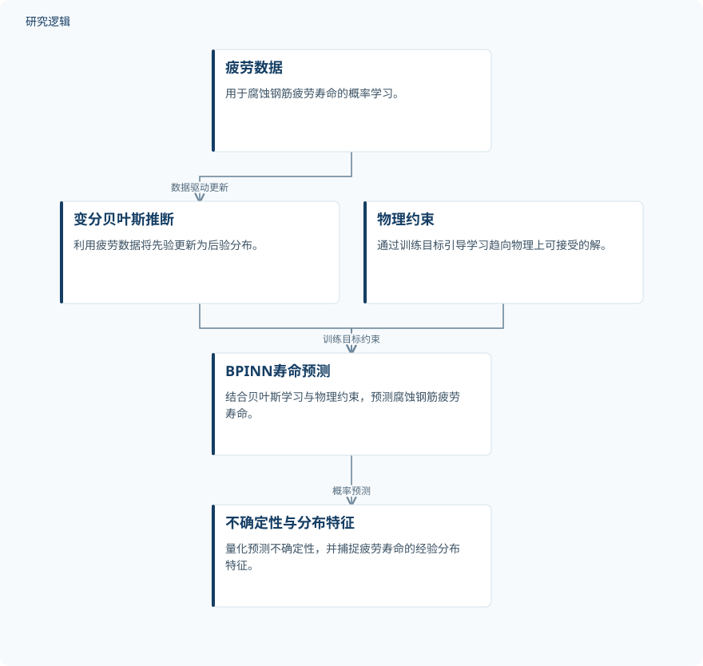

摘要解读
用于锈蚀钢筋疲劳寿命概率估计的贝叶斯物理信息神经网络
Bayesian Physics‐Informed Neural Networks for Probabilistic Fatigue Life Estimation of Corroded Steel Reinforcement
解读更新 2026-11-10 11:54 · 依据公开摘要整理，未核验全文细节
腐蚀钢筋的疲劳寿命预测，不仅要回答“能用多久”，还要刻画预测的不确定性。这项研究将贝叶斯学习与物理约束结合，关注预设正态分布是否掩盖了寿命分布的真实特征，为理解腐蚀—疲劳可靠性提供了切入点。
文章目录
寿命预测不能只看点预测
钢筋力学性能关系到混凝土结构的耐久性。摘要指出，服役环境中的钢筋腐蚀普遍存在，腐蚀—疲劳失效是结构退化的重要驱动因素，在桥梁基础设施中尤其值得关注。
研究针对的一个问题，是包括概率神经网络（PNN）在内的传统数据驱动方法，往往借助正态分布假设构建点预测与置信区间。这种处理可能遮蔽寿命分布的内在特征，而有限的物理可解释性也会制约工程决策的可靠性。
用疲劳数据更新概率，用物理约束引导学习
作者提出面向腐蚀钢筋的贝叶斯物理信息神经网络（BPINN）框架。其概率学习环节采用变分贝叶斯推断，直接利用疲劳数据将先验更新为后验分布；摘要强调，该框架不预设寿命分布形式，以此开展不确定性量化。
物理信息则通过训练目标进入网络，以约束学习过程，使预测趋向物理上可接受的解。摘要没有展开具体物理关系或训练目标的表达式，因此目前能够明确的是约束的嵌入方式，而非其完整实现细节。
依据摘要整理的BPINN研究过程


概括疲劳数据驱动的贝叶斯更新与训练目标中的物理约束，不代表论文原图，也不补充摘要未报告的模型配置。
下载 SVG图示关系说明
实线表示相邻阶段的信息流，虚线表示跨阶段联系或反馈。
疲劳数据 → 变分贝叶斯推断：数据驱动更新；变分贝叶斯推断 → BPINN寿命预测：贝叶斯学习；物理约束 → BPINN寿命预测：训练目标约束；BPINN寿命预测 → 不确定性与分布特征：概率预测
预测表现更优，寿命分布明显偏离正态
摘要报告，BPINN在预测表现上持续优于传统神经网络。与PNN相比，它能够捕捉疲劳寿命的经验分布特征，并揭示明显的非正态性。这意味着，理解寿命的分布形态是本文的重要结果，而不只是点预测表现的比较。
作者同时将物理规律与贝叶斯学习的结合，概括为对稳健性和可解释性的增强。不过，摘要未提供具体误差指标、改善幅度或不确定性评价数值，因而不能据此量化其优势大小。
样本覆盖与验证边界仍需查阅正文
本解读仅依据完整摘要。摘要未交代样本数量、数据来源、腐蚀程度与加载条件，也未说明训练和测试的划分、对比网络的完整配置及验证范围。这些属于当前资料无法判断的信息，不代表论文未开展相关工作。
因此，目前不能判断所报告优势适用于哪些腐蚀与受载范围，也不能把面向结构评估的应用价值，等同于已经完成桥梁现场验证或运维决策效果验证。
阅读启发：同时追问分布依据与物理依据
阅读启发：面向疲劳可靠性与智能运维，值得进一步关注两个问题：寿命偏离正态的证据如何呈现，嵌入的物理约束又如何影响预测及其不确定性。这些问题直接承接摘要的核心主张，也有助于理解该框架的适用边界，而非提前认定其可直接用于工程决策。
以上为本站阅读启发与建议，不是论文已验证的结论。